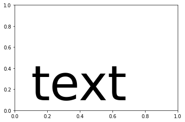
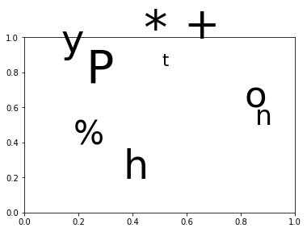
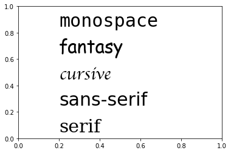
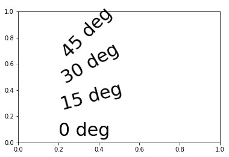

Text¶
Il est possible d’ajouter du texte et même des formules mathématiques à une graphique
plt.text(0.1, 0.1, 'text');

Ajouter du text¶
La fonction text permet d’jouter du text dans les axes.
La fonction figtext permet d’jouter du text dans la figure.
plt.grid()
plt.text(-0.2, 0.2, 'text')
plt.text(0.2, 0.2, 'text')
plt.text(0.4, 0.2, 'text', fontsize=20)
plt.text(0.4, 0.4, 'text', fontsize=40)
plt.figtext(0, 0, 'figtext', fontsize=40)
plt.figtext(1, 1, 'figtext', fontsize=40)
Text(1, 1, 'figtext')

Texte avec bordure¶
L’objet Text a beaucoup d’options.
y = [2, 4, 3, 6, 3]
plt.plot(y, 'o-')
plt.text(1, y[1], 'text', style='italic')
plt.text(2, y[2], 'boxed italics', style='italic',
bbox={'facecolor': 'green', 'alpha': 0.5, 'pad': 5})
Text(2, 3, 'boxed italics')

Labels¶
Matplotlib possède les fonctions suivantes pour placer un titre et des étiquettes pour les axes x et y.
plt.title('Title')
plt.xlabel('xlabel')
plt.ylabel('ylabel')
plt.text(0, 0, 'origin', fontsize=40)
Text(0, 0, 'origin')

OO-Style¶
x = np.linspace(0, 2, 100)
# Note that even in the OO-style, we use `.pyplot.figure` to create the figure.
fig, ax = plt.subplots() # Create a figure and an axes.
ax.plot(x, x, label='linear') # Plot some data on the axes.
ax.plot(x, x**2, label='quadratic') # Plot more data on the axes...
ax.plot(x, x**3, label='cubic') # ... and some more.
ax.set_xlabel('x label') # Add an x-label to the axes.
ax.set_ylabel('y label') # Add a y-label to the axes.
ax.set_title("Simple Plot") # Add a title to the axes.
ax.legend(); # Add a legend.

pyplot-Style¶
x = np.linspace(0, 2, 100)
plt.plot(x, x, label='linear')
plt.plot(x, x**2, label='quadratic')
plt.plot(x, x**3, label='cubic')
plt.xlabel('x label')
plt.ylabel('y label')
plt.title('Simple Plot')
plt.legend();

x = range(5)
y = [2, 4, 3, 5, 1]
plt.bar(x, y)
plt.text(3, 5.1, 'max', ha='center')
plt.text(4, 1.1, 'min', ha='center')
Text(4, 1.1, 'min')
plt.subplot()
plt.grid()
plt.axis([-1, 1, 0, 2])
(-1.0, 1.0, 0.0, 2.0)
np.arange(5)
array([0, 1, 2, 3, 4])
plt.figure()
plt.plot(*np.random.rand(40, 2))
plt.title('Easy as 1, 2, 3', fontsize=20, color='blue')
t = plt.xlabel('my data', fontsize=14, color='red')

Random text¶
plt.subplot()
for c in 'Python %/*-+':
plt.text(*np.random.rand(2), c, fontsize=np.random.randint(10, 80))

plt.subplot()
for c in 'Python is a nice language'.split():
plt.text(*np.random.rand(2), c, fontsize=np.random.randint(10, 50))

Annotation¶
t = np.linspace(0, 5, 100)
plt.plot(t, np.sin(2*t))
plt.annotate('local max', xy=(1, np.sin(2)), xytext=(2, 1.5),
arrowprops=dict(facecolor='red', shrink=0.05))
plt.ylim(-2, 2)
(-2.0, 2.0)

plt.suptitle('suptitle', fontsize=20, backgroundcolor='r', family='cursive')
plt.title('title')
plt.xlabel('xlabel', backgroundcolor='y')
plt.ylabel('ylabel')
plt.plot(x, y, 'ro-')
plt.annotate('annotate', (x[1], y[1]), (2, 2), arrowprops=dict(facecolor='b'))
Text(2, 2, 'annotate')

Famille de police¶
styles = ['serif', 'sans-serif','cursive', 'fantasy', 'monospace']
for i, s in enumerate(styles):
plt.text(0.2, i/5, s, family=s, fontsize=30)

fonts = ['Sans', 'Helvetica', 'Arial', 'Times']
for i, s in enumerate(fonts):
plt.text(0.2, i/4, s, family=s, fontsize=30)

Rotation¶
L’angle du text peut être choisi librement.
rotations = [0, 15, 30, 45]
for i, s in enumerate(rotations):
plt.text(0.2, i/5, str(s)+' deg', rotation=s, fontsize=30)

Poids¶
weights = ['normal', 'bold', 'heavy', 'light', 'ultralight']
for i, s in enumerate(weights):
plt.text(0.2, 0.05+i/5, s, weight=s, fontsize=30)